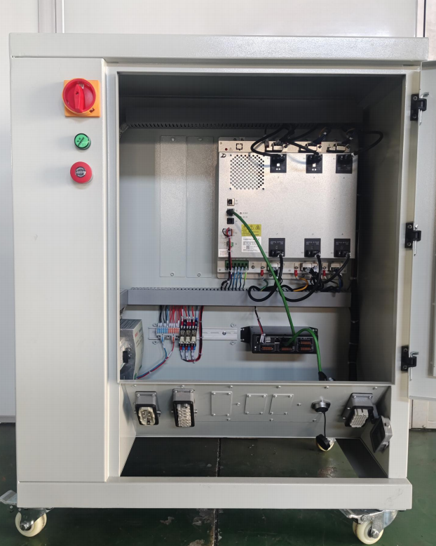
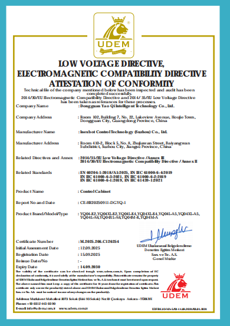
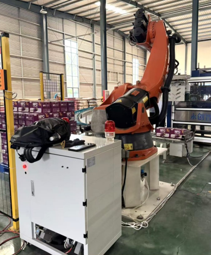
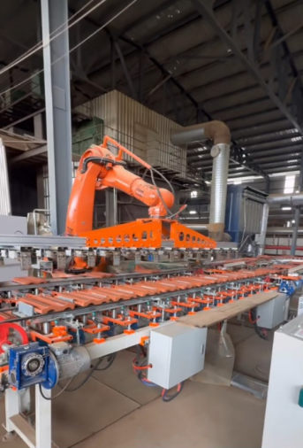
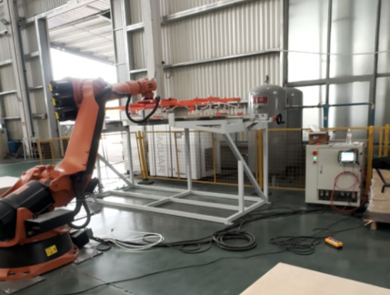
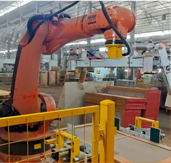
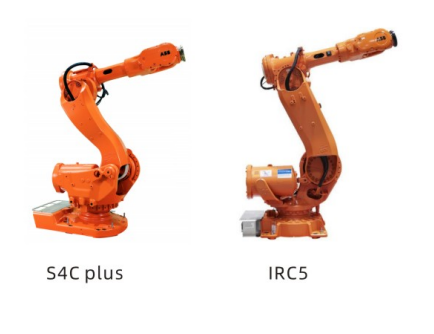
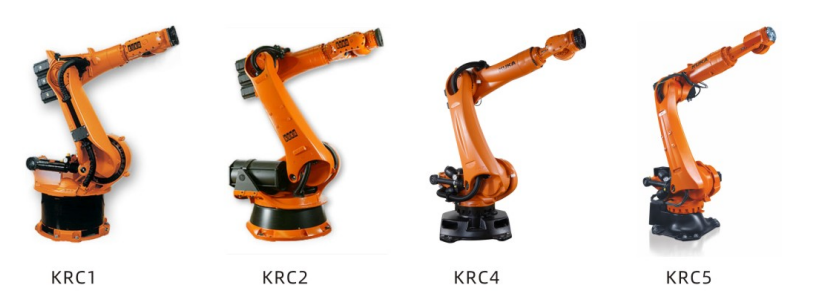

Extend the service life of mechanically sound ABB and KUKA robots with a modern replacement control system — without replacing the entire robot. HH Industrial provides retrofit cabinets, control system configuration, wiring adaptation, and modern industrial communication integration, helping integrators reduce replacement costs and bring aging robots back into service.
Reference values; actual savings depend on robot condition, controller architecture and project scope.
If the robot mechanics are still in good condition, replacing the entire robot may not be the most practical option. A controller retrofit can preserve the value of the existing mechanical asset while addressing obsolete electronics, unsupported controllers and costly legacy spare parts.
Controller retrofit is most suitable when the robot arm remains mechanically serviceable but the original controller, drives, teach pendant or spare parts are obsolete or difficult to maintain.
Keep mechanically sound robot arms in service by replacing aging control systems with modern control technology.
Combine local inspection, mechanical refurbishment and service capabilities with our retrofit cabinets, technical support and China-based manufacturing resources.
When original controllers, drives or teach pendants become difficult or expensive to source, a retrofit can provide a more sustainable alternative to increasingly scarce legacy parts.
Evaluate the robot model, existing controller, motors, feedback system, safety architecture and application requirements before confirming the retrofit path.
Configure the retrofit control cabinet around the specific robot platform and project requirements.
Evaluate and adapt robot wiring, feedback, I/O, safety circuits and external interfaces as required by the selected retrofit architecture.
Provide technical communication, documentation and engineering coordination for overseas automation partners.
An industrial robot controller retrofit replaces an obsolete control system while retaining a mechanically serviceable robot arm. A retrofit cabinet is configured around the robot's motors, feedback system, wiring, safety architecture and application interfaces. It provides the cabinet configuration, wiring adaptation and industrial communication integration required to return an aging robot to service.
Selected HH Industrial retrofit cabinet configurations are built around the Inexbot Motion Control System, providing the motion, logic and communication layer required for modern robot control.
Explore the Motion Control System →
The reference cabinet is configured around the robot axes, motors, feedback and application requirements.
Cabinet layout, field wiring, safety, I/O and peripheral interfaces are evaluated for the selected robot platform.
Industrial communication interfaces such as EtherCAT and PROFINET can connect the retrofit to current PLC, I/O and production environments.
Final electrical, motion and interface specifications depend on the robot model, motors, feedback, wiring, safety and application load. Detailed motion-control architecture is covered in the Motion Control System reference.
Reference values are based on YQ04L controller documentation. Final electrical, motion, and interface specifications require model-level evaluation.

The control cabinet product line is CE certified to the EU Low Voltage Directive and EMC Directive.
Certificate No. M.2025.206.C126254
We support integrators evaluating controller replacement for established robot applications. Final cell engineering, risk assessment, and site integration remain under the integrator's control.
Modernize control and communication while retaining suitable robot mechanics, welding equipment, and partner-owned process engineering.
Adapt controller, I/O, and safety interfaces for glass, sheet, tile, food, and other established transfer applications.
Support updated machine communication and peripheral interfaces for loading, unloading, and legacy tending applications.
Evaluate controller replacement when original control hardware is obsolete or difficult to maintain.




ABB robot controller retrofit requires platform-specific evaluation of the robot model, existing controller, motors, feedback signals, wiring, and peripheral interfaces. We support integrators with compatibility assessment, wiring adaptation, interface conversion, and technical documentation before the retrofit configuration is confirmed.

Reference compatibility covers ABB S4C Plus and IRC5 generations, including IRB 6400, 6600, 6640, and 6700 series examples.
Motor feedback, cabinet wiring, safety circuits, I/O, fieldbus, and peripheral interfaces are checked against the proposed controller configuration.
IRC5 second-generation and OmniCore-related environments require case-by-case technical review. Compatibility references do not imply ABB authorization or affiliation.
KUKA robot controller retrofit focuses on KRC system modernization and the compatibility differences between robot generations. We evaluate the existing KRC controller, wiring, motor and encoder interfaces, safety architecture, and communication requirements to help integrators define a technically appropriate retrofit path.

Reference compatibility spans KRC1, KRC2, KRC4, and KRC5 environments, with heavy-payload KR60, KR150, KR180, KR200, KR210, KR240, KR360, and KR500 series examples in the controller documentation.
Controller generation, motor and encoder signals, wiring differences, safety design, payload, and application interfaces are evaluated before configuration.
Final support depends on the exact KUKA robot, KRC generation, installed options, and machine condition. Compatibility references do not imply KUKA authorization or affiliation.
We review the robot model, controller, wiring, application, safety, and interface requirements.
We coordinate cabinet specification, wiring adaptation, interface conversion, and required documentation.
We provide test records and technical support so the integrator can complete application validation and site integration.
The YQ04L reference service scope includes a 1-year controller cabinet warranty.
Connectivity supports basic monitoring and remote electrical diagnostics, with a documented 48-hour remote response target.
Operation and maintenance manuals, video guidance, training, and remote commissioning support are available for integrator teams.
Answers for manufacturers, automation partners and system integrators evaluating an ABB or KUKA robot controller replacement.
It completely replaces the original control cabinet while retaining the existing robot arm. The original KUKA/ABB controller and control electronics are no longer required.
If the robot arm is mechanically sound, retrofitting can extend its service life at a lower cost and with fewer mechanical changes than full replacement.
We currently support selected ABB and KUKA robot models. Compatibility is evaluated case by case.
Our cabinet uses its own motion-control hardware and software. It connects to the robot through the required motor feedback and industrial interfaces without changing the robot’s mechanical structure.
Yes. Our cabinet works directly with the original KUKA motors and resolver feedback. In most projects, there is no need to replace the motors or install additional feedback devices.
Please provide the robot brand and model; in some cases, motor, resolver, and electrical information may also be required.
Yes. Depending on the configuration, it can communicate with PLCs, production equipment, and factory networks through I/O and industrial communication protocols such as PROFINET and EtherCAT.
Yes, subject to technical evaluation. It can support palletizing, handling, welding, material handling, machine tending, and material processing. Welding equipment can exchange commands and status signals with the robot controller through I/O or fieldbus communication.
The robot arm remains unchanged, so its performance mainly depends on its mechanical condition, calibration, and commissioning quality.
Yes.
Yes. CE certification is available for the control cabinet.
Share the robot brand, model, controller, application, and required interfaces. Our team will review the retrofit requirements within 24 hours.